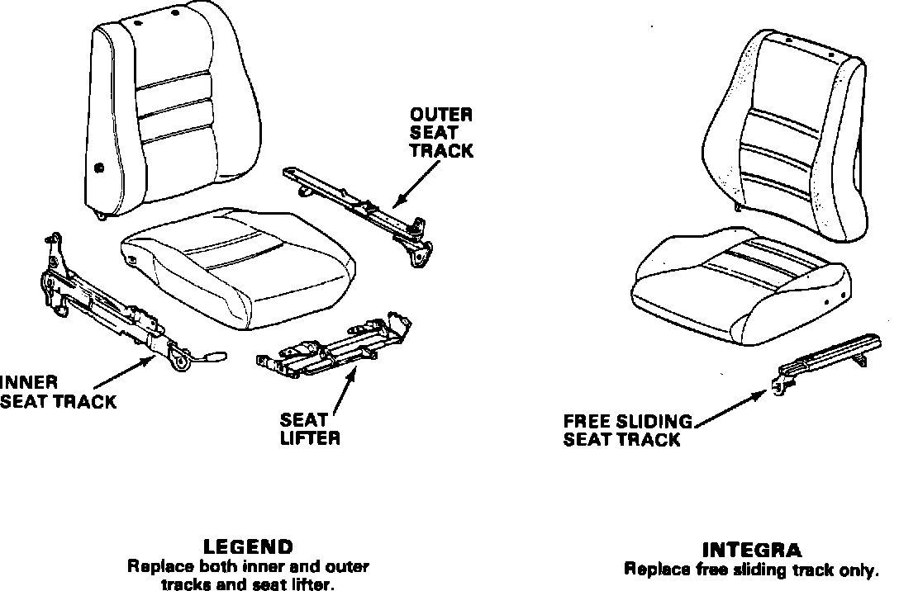
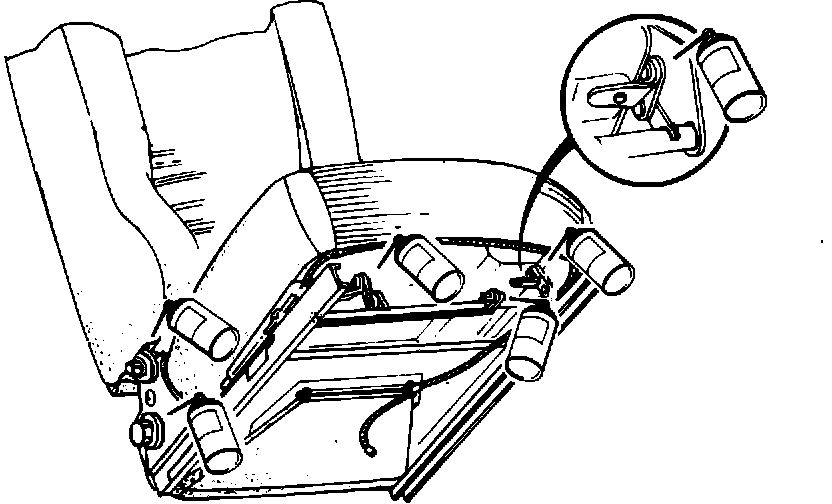

Seat Track - Rattle
86acura01
November 3, 1986
YEAR MODEL APPLICATION
1986 ALL SEE AFFECTED
VEHICLES
86-018
Seat Track Rattle
SYMPTOM
A rattling noise from the base of the seat.
AFFECTED VEHICLES
Legend up to Vin 4KA - - GC0002164
Integra 5 Dr. up to Vin DA1 - - FS003169
Integra 3 Dr. up to Vin DA3 - - FS002059

CORRECTIVE ACTION
1. First, check for loose seat track bolts. If the bolts are loose, retorque them to the following specification.
Legend, 3.2 kg-m (23 ft.lbs.) Integra, 2.2 kg-m (16 ft.lbs.)
2. If the rattle persists, replace the seat track.
Note: Make sure the new seat tracks have been greased before they are installed.

For Legends: Before reinstalling the seat(s), lubricate the points shown with Honda lithium Grease (P/N PC-HWG266).
PARIS INFORMATION
Model Part Description Part No.
Legend-Left Side Outer slide adjuster 81660-SD4-A02
Lifting adjuster NH-89L 81610-SD4-A01ZA
Lifting adjuster B-44L 81610-SD4-A01ZB
Lifting adjuster YR-94L 81610-SD4-A01ZC
Inner slide adjuster 81670-SD4-A02
Legend-Right Side Outer slide adjuster 81260-SD4-A01
Inner slide adjuster 81270-SD4-A01
Integra Free slide adjuster 77510-SB3-641
WARRANIY CLAIM INFORMATION
Legend (Driver's Seat)
Operation number: 851240
Flat rate time: 0.4 hour Failed P/N: 81660-SD4-A01
Defect code: 043
Contention code: B07
Legend (Passenger's Seat)
Operation number: 852240
Flat rate time: 0.4 hour Failed P/N: 81260-SD4-A01
Defect code: 043
Contention code: B07
Integra
Operation number: 851240
Flat rate time: 0.4 hour per seat Failed P/N: 77510-SB3-641
Defect code: 043
Contention code: B07